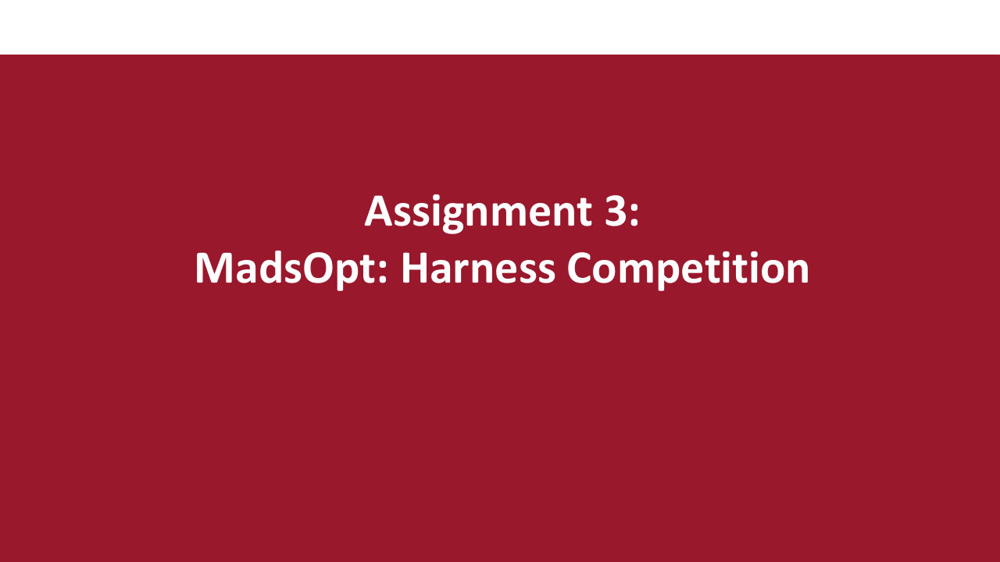
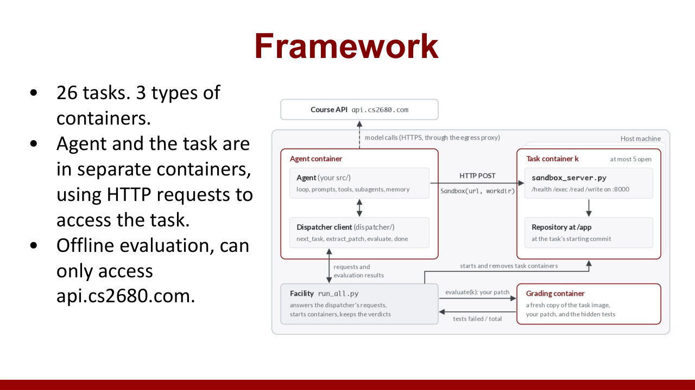
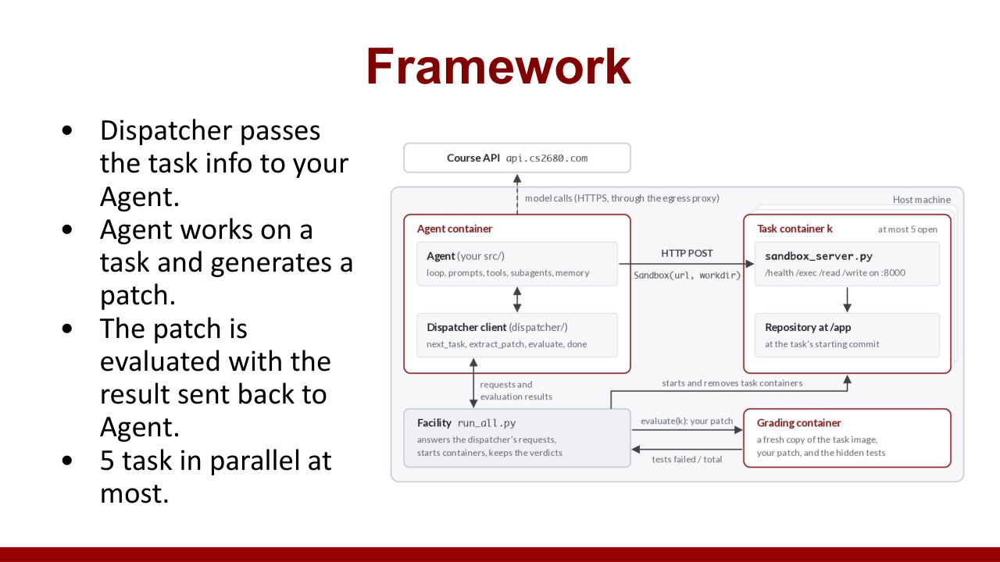
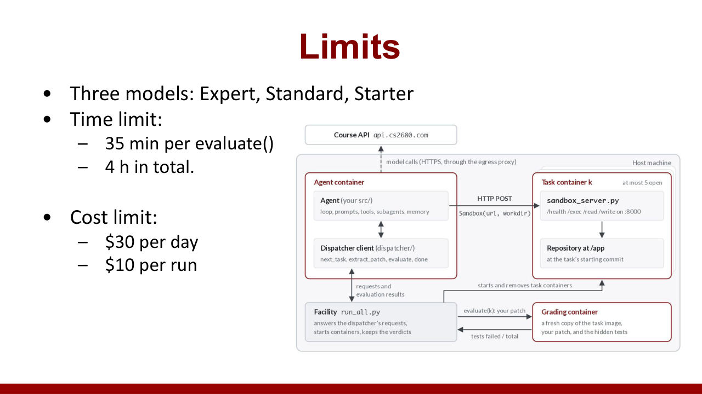
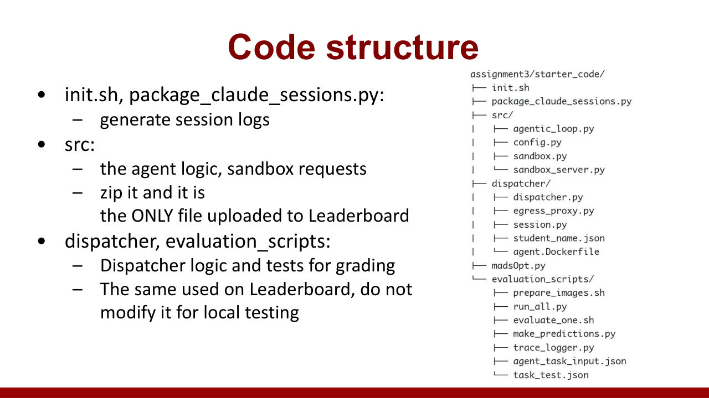
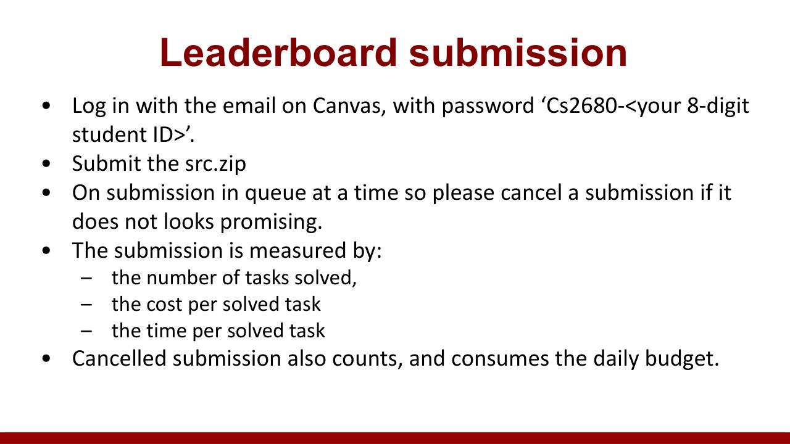
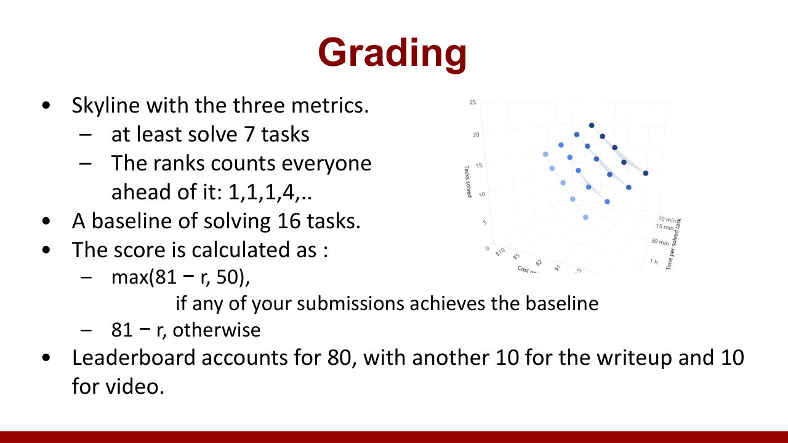

附 · 作业讲义 · 作业 3 · 10-05 发布
作业 3 — Mads-Opt：Harness 优化竞赛
Assignment 3 — Mads-Opt: Harness Competition
优化你的编程智能体 Harness，让每个 token 都物有所值；按排行榜排名与相对基线的提升计分。
共 7 页 · 原版 PDF：8_assignment3.pdf · 键盘 ←/→ 或 J/K 翻页

1 / 7
作业 3：MadsOpt——Harness 优化竞赛

2 / 7
框架
- 26 个任务，3 种类型的容器
- 智能体和任务位于不同的容器中，通过 HTTP 请求访问任务
- 离线评测，只能访问 api.cs2680.com

3 / 7
框架
- 调度器（Dispatcher）把任务信息传给你的智能体
- 智能体处理任务并生成一个补丁
- 补丁被评测，结果发回给智能体
- 最多同时并行 5 个任务

4 / 7
限制
- 三种模型：Expert、Standard、Starter
- 时间限制：
- 每次 evaluate() 35 分钟
- 总计 4 小时
- 成本限制：
- 每天 $30
- 每次运行 $10

5 / 7
代码结构
- init.sh、package_claude_sessions.py：生成会话日志
- src：智能体逻辑、沙箱请求
- 打成 zip，这是上传到排行榜的唯一文件
- dispatcher、evaluation_scripts：调度逻辑和用于评分的测试
- 与排行榜上使用的完全相同，本地测试时不要修改

6 / 7
排行榜提交
- 用 Canvas 上的邮箱登录，密码为
Cs2680-<你的 8 位学号> - 提交 src.zip
- 同一时间只能有一个提交在队列中，如果看起来不理想，请取消该提交
- 提交按以下指标衡量：
- 解决的任务数
- 每个已解决任务的成本
- 每个已解决任务的耗时
- 被取消的提交同样计数，并消耗当日预算

7 / 7
评分
- 基于三个指标的天际线（skyline，即帕累托前沿）
- 至少解决 7 个任务
- 排名计算排在它前面的所有人：1, 1, 1, 4, ……
- 基线：解决 16 个任务
- 分数计算方式：
- 如果你有任一提交达到基线：max(81 − r, 50)
- 否则：81 − r
- 排行榜占 80 分，另有 10 分给书面报告、10 分给视频